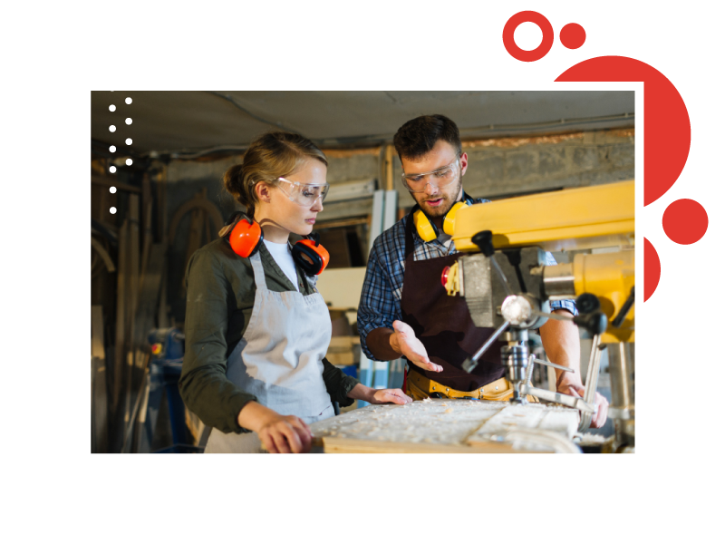

Entra em discussão, pois, a dimensão identitária do trabalho e da formação para o trabalho, que não pode ser abordada sem ser relacionada com a dimensão cultural do fazer técnico.

Figura 11 - Fonte: Freepick
Para Sigaut (2009), a entrada no mundo do trabalho é, antes de mais nada, a participação em toda uma cultura técnica e profissional, da qual o sujeito passa a fazer parte.
Lave e Wenger (1991) também ressaltaram as relações que se travam de forma emblemática nas formas de aprendizagem em “comunidades de práticas” como corporações, nas quais o saber retirado dos intercâmbios envolve técnicas, valores e desenvolvimento de identidade.
Figura 12 - Fonte: Freepcik
Aí, lembra Barato:
Em destaque, um retângulo vermelho com contorno azul e texto em branco.
(...) os aprendizes de um ofício se integram à comunidade, desde o primeiro dia, por meio da produção de obras. Assim, desde o início, a participação na produção, mesmo que em atividades muito simples (pregar botões em uma oficina de alfaiataria, por exemplo), desperta um sentimento de pertencimento à categoria (o aprendiz de alfaiate se percebe como um membro ativo da categoria assim que começa a executar pequenas tarefas vinculadas ao ofício). (2015, p. 26).
Dessa forma, aprende-se "com", não só um "quê". Assim, aprender numa "comunidade de práticas" (pode ser a sala de aula, o laboratório ou o ambiente de trabalho) “implica tornar-se uma pessoa diferente em relação às possibilidades abertas por estes sistemas de relações” (LAVE e WENGER, 1991, p. 53).